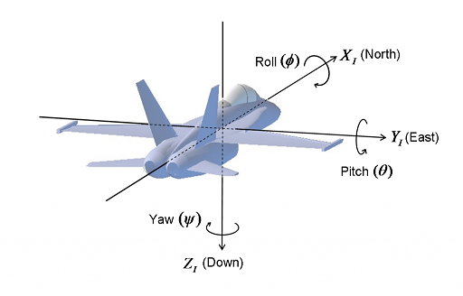
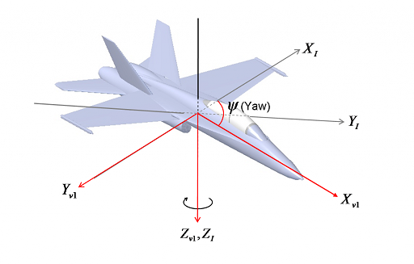
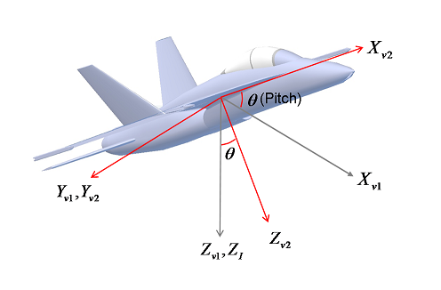
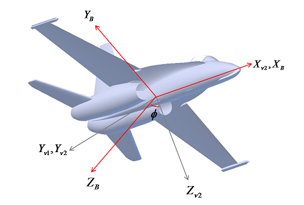
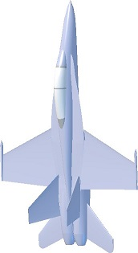
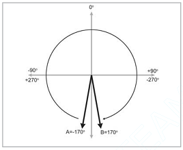

问题
欧拉角是什么、干什么用？如何跟飞机结合？围绕哪些轴进行旋转？为什么会有万向节死锁？万向节死锁如何体现、有什么影响、如何避免？
什么是欧拉角
欧拉角是一组用来描述物体位置的参量。在飞控中通常用于描述飞机的姿态，也就是飞机相对于NED坐标系的方位。这个方位其实可以通过绕某个轴的单次旋转表示。由于欧拉证明了单个角位移可以分解为一个角位移序列。有时候为了直观或其它方面（如飞控中最终的电机动力分配）的考虑，将单次旋转分解为绕三个互相垂直的坐标轴的旋转序列，这就是欧拉角。
由于欧拉角本身的一些缺点（后面会涉及到），在实际使用的过程中，通常需要规定旋转轴、角度范围及旋转顺序。
旋转轴及旋转顺序
这里只对欧拉角用于表示飞机姿态时的情况进行说明。既然是姿态，就要有参考坐标系，因为所谓姿态，就是物体相对于参考目标的方位。这里的参考坐标采用地球NED坐标。设飞机初始姿态和NED坐标对齐。飞机在NED坐标中的任何姿态都可以从初始姿态通过绕某一固定轴旋转某个角度得到。将该单次旋转分解成绕三个旋转轴的三次旋转，旋转的角度就是欧拉角。旋转轴可以是NED坐标轴，也可以是机身坐标或者其它。旋转顺序也可以任意规定。
飞行器中，特别是四轴飞行器，由于动力系统以机身坐标进行姿态控制，所以欧拉角的旋转轴通常选用机身坐标轴。旋转顺序为yaw、pitch、roll。文章Understanding Euler Angles对此作了清晰的描述。除了NED和机身坐标，文章还引入了两个过渡坐标，用来辅助说明旋转过程。
设飞机初始状态和NED坐标对齐，如下图所示：

然后飞机绕$Z$轴，也就是yaw，旋转$\Psi$完成第一次旋转，如下图。将旋转后的机身坐标称为“过渡坐标1”，图中红线部分。灰线部分为NED坐标。

接着以“过渡坐标1”为准，绕$Y$轴，也就是pitch，旋转$\Theta$完成第二次旋转，如下图。旋转后的机身坐标称为“过渡坐标2”，图中红线部分。灰线部分为“过渡坐标1”。

最后，在“过渡坐标2”的基础上行，绕$X$轴，也就是roll，旋转$\Phi$，完成整个欧拉角的旋转，如下图。红线部分为机身坐标，灰线部分为“过渡坐标2”。

特别强调，由于欧拉角在此是被用于表示飞机的姿态。所以核心关注的是如何在和标准参考位置，也就是NED坐标对齐的初始状态，经过绕自身三个轴通过三次旋转到达当前姿态的问题。而不是如何从当前姿态到下一个姿态怎么旋转的问题。这一点非常重要，如果理不清，就会造成理解上的困惑。
万向节死锁
看了好几处地方，包括维基百科，都有提到说词语“死锁”有点误导。对于飞机来说，在三维的空间中旋转，不存在哪个轴被“锁死”的情况。所谓“万向节死锁”其实说的只是，在欧拉角的三次旋转角度中，中间一次的旋转为90°，导致第一次和第三次的旋转轴重合，从而失去一个自由度的现象。
这就导致解的不唯一。如下图，将飞机的pitch旋转90°后出现万向节死锁。这个时候，由于yaw和roll重合，所以既可以保持roll为0，通过旋转yaw和pitch得到，也可以通过保持yaw为0，通过旋转pitch和roll得到。

在数学上体现为，$\cos\frac{\pi}{2}$为0，计算过程中又为分母，导致出现奇点。姿态表示上的混乱会导致姿态控制上的不知所措，所以在使用欧拉角表示姿态的算法中要避开万向节死锁，这一点在飞控算法上得到了证实。
欧拉角优缺点
优点
欧拉角符合人们的空间知觉，所以通俗易懂方便使用。由于只需三个数据就可以表示一个方位，所以占用存储空间小。且欧拉角只是三个角度，不存在非法数据的问题，这给程序处理会带来方便。
缺点
对于一个方位，可以用不同的欧拉角进行表示。最明显的一个例子就是，将一个角度增加360°，实际方位不会发生任何变化。还比如，将pitch旋转135°，和先将yaw旋转180°，再将pitch旋转45°，最后将roll旋转180°的效果相同。这也是为什么在使用欧拉角的时候要限制旋转范围的原因。
即使限制了旋转范围，在插值的过程汇总还是会遇到问题。如下图，假设飞机当前姿态中yaw为-170°，在A处。目标位置是170°，在B处。由于角范围的限制，yaw的取值范围是-180°~180°。在进行插值的时候，飞机不得不按顺时针方向旋转340°以达到目标位置，虽然二者仅仅相差20°的距离。（注意，这一例子仅限于图形处理和动画中，和飞行器姿态控制情况有差异，不能直接套用）

综合以上，可以发现欧拉角的缺点主要有，表示不唯一，插值困难，有万向节死锁的问题等。
欧拉角选用
在常用的姿态表示方法中，除了欧拉角，还有四元数和旋转矩阵。三种方法中，欧拉角最直观、最容易理解、存储空间少，但存在万向节死锁、插值速度不均匀等缺点，且不可以在计算机中直接运算。四元数不存在万向节死锁问题，利用球面插值可以获得均匀的转速，存储空间也较少，但是不好理解。旋转矩阵法是最便于计算机处理的，但不可以直接插值，冗余信息多，存储空间大，同样不直观。所以，在使用中，一般人机交互段采用欧拉角，插值等用四元数，正逆运动学运算中用矩阵表示法。
应用领域
机器人学、飞行器控制、动画仿真图形学等。
总结
特别需要注意的是，和机械结构部件不同，欧拉角只是用来表示飞行器的姿态，参考坐标系是NED坐标。实质含义是，飞机从和NED坐标对齐的位置，通过绕自身坐标的三个旋转，到达当前位置。这三个旋转的角度就是欧拉角。一切和欧拉角相关的内容都是在此基础上展开的。包括表示不唯一，万向节死锁等。问题的解决也应在该环节。
由于有了上述的前提，包括对欧拉角旋转顺序的定义、对旋转角范围的限制。在飞行器姿态控制中，不存在万向节死锁的问题。以四轴为例，在当前姿态向目标姿态逼近的过程中，有一个插值的环节。也就是说是逐渐逼近的。而每一次逼近飞机都是在当前实时的姿态为基准进行细微的旋转。并且旋转是绕三个轴同时进行的，和三次先后单独旋转不同。
之前正是因为看了一些网上结合望远镜、炮台、机械手等相关的一些例子。导致先入为主，拿四轴网上套，而没有弄明白这些关系，导致理解上陷入误区，导致困惑不解。